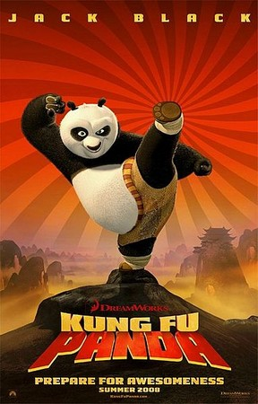
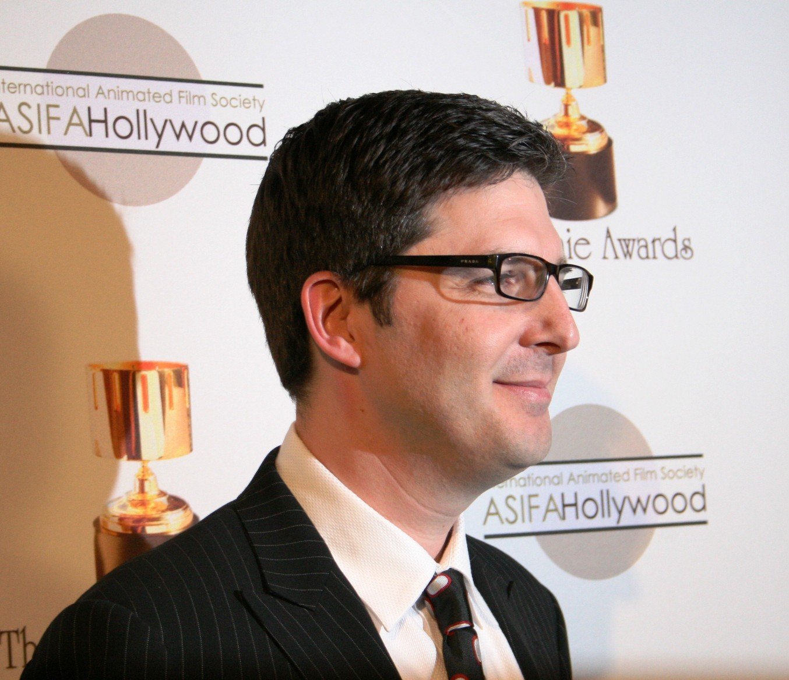

Kung Fu Panda é um filme de comédia ação, aventura e animação em computação gráfica lançado em 2008, produzido pela DreamWorks Animation e distribuído pela Paramount. Foi dirigido por John Stevenson e Mark Osborne. Kung Fu Panda se passa na China antiga onde kung fu era bem utilizado, Kung Fu Panda se segue 2 sequência e o ambiente do filme é animais antropomórfico.
No filme aparece o protagonista que é um panda chamado Po Ping, ou como alguns fãs diz "O Grande Gordo Panda." e cada saga segue uma evolução do protagonista e também dos 5 furiosos que também aparece nos filmes, como Tigresa, Macaco, Garça, Louva-a-Deus e Víbora treinada pelo mestre muito habilidoso Mestre Shifu.
No Kung Fu Panda tem Mestre Oogway o maior mestre do Kung Fu Panda onde Treino Mestre Shifu com uma sabedoria muito grande graças a sua espécie que é uma tartaruga que vive por muito mais tempo.
Po é adotado pelo San Ping ou SR Ping uns dos protagonista do filme que é um Ganso que tem um restaurante pequeno de macarrão na vila onde po foi cuidado por muito tempo. O panda gigante trabalha também junto com seu pai vendendo macarrão, além disso panda era maior fã de kung fu e queria se tornar um mestre do kung fu no Vale da Paz onde é que o protagonista mora. Em um certo dia chegou um evento onde grão-mestre Oogway que é uma tartaruga de Galápagos irá escolher quem seria o próximo dragão guerreiro e herdeiro do Kung Fu, Po queria ver mas os portões estavam fechados no palácio e o panda queria muito ver então procurou ver de todas as formas vendo de frestas de buracos até uma cadeira de fogos de artifício capaz de fazer um panda gigante voar que foi o que ele fez e no momento que o grão-mestre estava pronto para escolher quais dos 5 furiosos seria o próximo dragão guerreiro, o protagonista cai de frente para Oogway e a Tartaruga na sua idade já avançado fica até meio surpreso e aponta para o grandalhão e no meio disso todos ficam espantado com a escolha até o mestre shifu um panda vermelho, tigresa até se questiona se está apontando para ela e o po para confirmar ele anda para o lado e para o outro mas ele não para de apontar para o panda. O Grão-Mestre diz que o universo trouxe o dragão guerreiro e todos ficam confusos principalmente mestre shifu e ele questiona sobre isso falando que é um acidente mas o Mestre Oogway diz "Não existe Acidentes" uma simples frases mas com significado extremamente forte.
Esse é o primeiro trailer dragão guerreiro
O segundo trailer a paz interior
E o terceiro trailer a dominação do chi O Dragão Guerreiro
Confira também o elenco dos personagens para conhecer melhor eles tanto os personagens quanto os dubladores